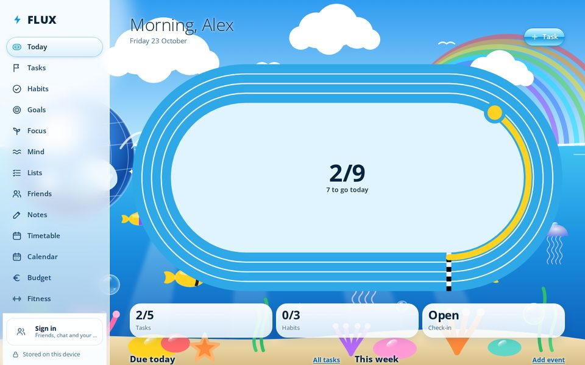
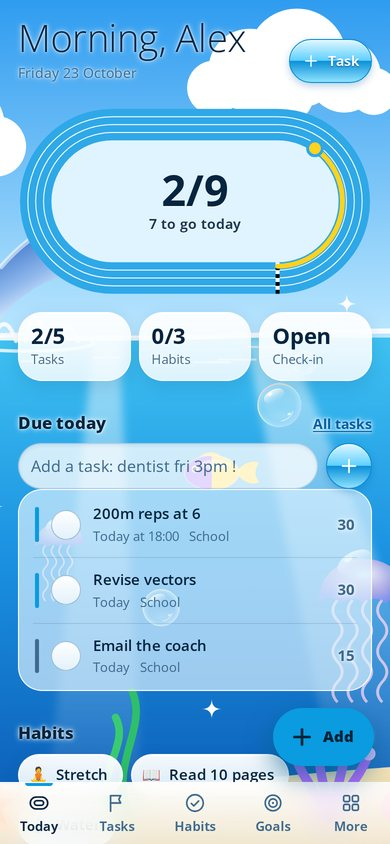
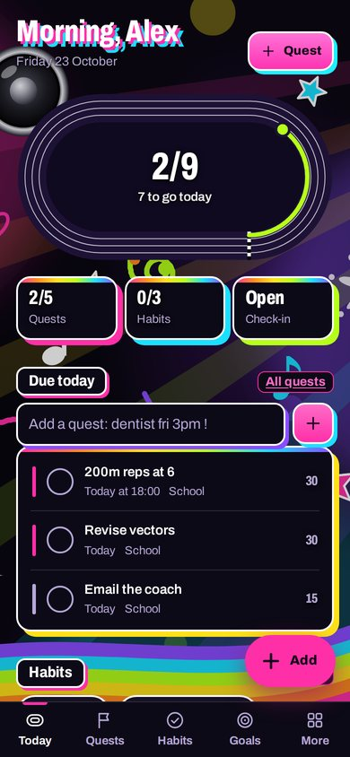
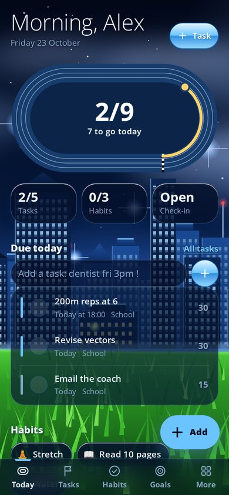

Your life,
levelled up.
FLUX turns tasks into quests, habits into streaks and your phone into something you actually want to open. Free, no ads, and it works offline.
Free · No ads · No account needed · Tap a colour at the bottom to restyle this page

Everything for your day
One app for the stuff you actually need to stay on top of.
Quests, not chores
Tasks earn XP and levels, and a running track fills up as your day gets done.
Habits and streaks
Tick habits off in one tap and watch your streaks grow.
Focus timer
A Pomodoro timer that keeps going in the background and pings you when time is up.
Timetable and calendar
Your classes, events and countdowns in one place. Import your calendar too.
Notes and journal
Rich notes, handwriting, a journal and quick mood check-ins.
Friends and chat
Add friends, chat and show off your profile. Totally optional.
Widgets and icons
Home screen widgets for today, habits, focus and your timetable, plus an app icon for every theme.
Private by default
Everything stays on your phone. Accounts and cloud sync are there if you want them.
15 themes, one tap away
Eleven original Frutiger themes inspired by the glossy look of the 2000s, designed with the help of AI, plus clean classics for everyone else. Tap one to see this whole page change.
Rice your FLUX
Make it look like nothing else on your phone.
- Move everything: put the menu on any side, hide it, rename sections, pick fonts, corners, card styles and your own accent colour.
- Your own CSS and HTML for full control over the look.
- Mods: small scripts that add taskbars, docks, menus and animated backgrounds. They run in a locked box with no internet, and only see your data if you say yes.
- A gallery to share your setup and try other people's in one tap, with instant undo.
- Themed widgets and app icons that match your setup.


Get FLUX
FLUX is an Android app. Installing takes about a minute.
Open the file
If your phone asks, allow installing apps from your browser or files app, then tap Install.
Make it yours
Pick a theme and start your first quest. Sign in later only if you want friends or sync.